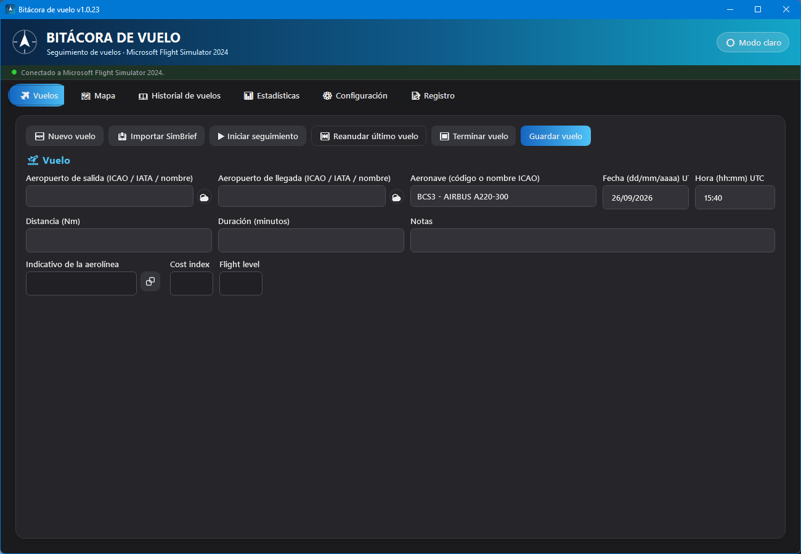
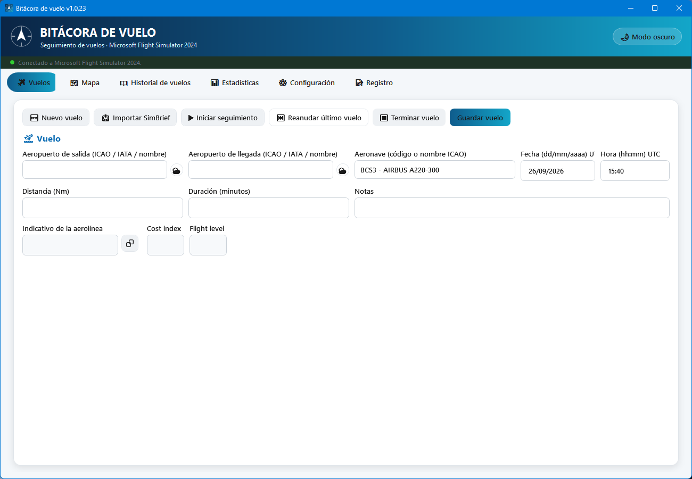
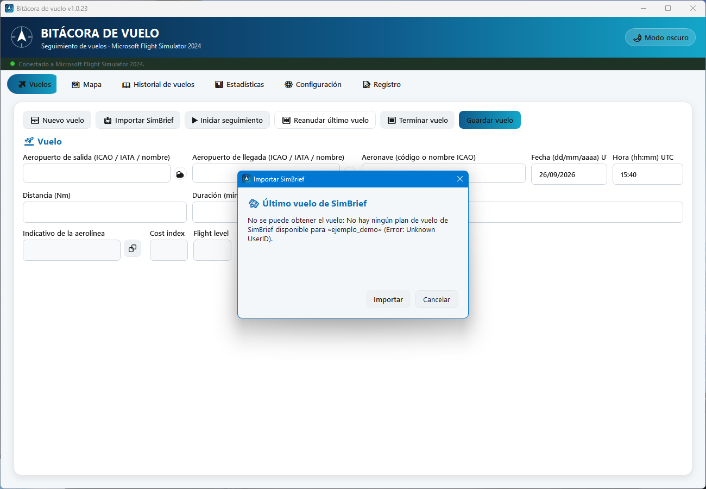
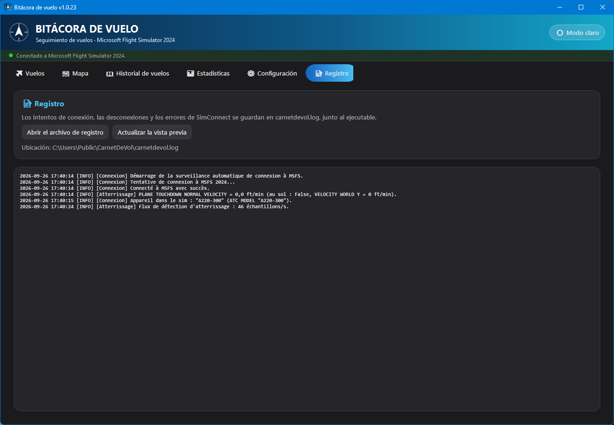

🧭 1. Presentación
Qué hace la Bitácora de vuelo y para quién es.
La Bitácora de vuelo (Carnet de Vol) es una aplicación de Windows independiente que mantiene el historial de todos los vuelos que realiza en Microsoft Flight Simulator 2024. Funciona de tres formas complementarias:
- Seguimiento en directo: conectada a MSFS mediante SimConnect, detecta el despegue, registra la traza GPS segundo a segundo, detecta el aterrizaje y evalúa su calidad, y guarda el vuelo automáticamente al detener el seguimiento.
- Introducción manual: para anotar un vuelo a posteriori, sin seguimiento en directo.
- Importación: desde un plan de vuelo de SimBrief (rellena el formulario) o desde una exportación de SimToolKitPro (importación masiva del historial).
Todos los datos se quedan en local, en una base SQLite junto al ejecutable: no se envía ningún dato a ningún servidor, salvo las consultas de solo lectura a SimBrief, adsbdb y aviationweather.gov descritas en esta guía.
🚀 2. Primer inicio
Lo que ocurre automáticamente la primera vez que abre la aplicación.
En el primer inicio la base de datos está vacía: la aplicación descarga entonces automáticamente, en segundo plano, los dos conjuntos de datos de referencia que necesitan los campos de búsqueda:
| Datos | Fuente | Volumen aproximado |
|---|---|---|
| Aeropuertos | ourairports-data (GitHub) | ~72 000 aeropuertos |
| Tipos de aeronave | rikgale/ICAOList (GitHub) | ~2 800 tipos |
No hace falta hacer nada: solo se necesita conexión a Internet en este primer inicio. Después puede actualizarlos manualmente en cualquier momento desde la pestaña Configuración.
carnetdevol.db (sus vuelos y los datos de referencia),
carnetdevol.log (registro de conexión de SimConnect),
theme.txt (tema claro/oscuro) y, si elige un idioma,
settings.json. Estos archivos no forman parte de la instalación:
si mueve el ejecutable, cópielos con él (junto con la carpeta
Languages incluida con la aplicación) para conservar su
historial y su configuración.
🖥️ 3. Interfaz general
El encabezado, el indicador de conexión, las seis pestañas, el tema y el idioma.
La ventana principal tiene tres zonas fijas, sea cual sea la pestaña activa:
- Un encabezado arriba, con el botón 🌙 Modo oscuro / ☀️ Modo claro que cambia al instante el tema de toda la aplicación (se recuerda entre sesiones);
- Justo debajo, una barra de estado con un punto de color (rojo = no conectado, verde = conectado) y un texto con el estado de la conexión a MSFS 2024. Mientras no está conectada, la aplicación lo reintenta automáticamente cada 5 segundos, sin que tenga que hacer nada;
- Seis pestañas: Vuelos, Mapa, Historial de vuelos, Estadísticas, Configuración y Registro, descritas en las secciones siguientes.
La aplicación se muestra en el idioma de Windows si está disponible (español, francés o inglés, sea cual sea la variante regional: español de España, de México, de Argentina…), y en inglés en caso contrario. Puede cambiarlo en cualquier momento en la pestaña Configuración.


✈️ 4. Pestaña Vuelos
El corazón de la aplicación: introducir, importar o registrar un vuelo en directo.

Introducción manual
Para anotar un vuelo sin seguimiento en directo:
- Pulse 🆕 Nuevo vuelo para empezar con un formulario vacío.
- Indique el aeropuerto de salida y el aeropuerto de llegada: ambos campos aceptan un código ICAO o IATA o parte del nombre del aeropuerto; mientras escribe aparece una lista de sugerencias, que puede elegir con el ratón o el teclado.
- Indique la aeronave del mismo modo (código o nombre ICAO).
- La distancia (Nm) se calcula automáticamente en línea recta (ortodrómica) en cuanto se eligen la salida y la llegada; puede corregirla a mano si es necesario (por ejemplo, para reflejar una ruta real más larga).
- Complete la fecha/hora UTC de salida (formatos estrictos
dd/mm/aaaayhh:mm), la duración en minutos y, si quiere, unas notas. - Pulse Guardar vuelo.
Importar desde SimBrief
Si prepara sus vuelos con SimBrief, la aplicación puede obtener su último plan de vuelo y rellenar el formulario por usted (la API de SimBrief solo devuelve el vuelo más reciente, nunca un historial).
- Indique primero su nombre de usuario de SimBrief en la pestaña Configuración (una sola vez).
- En la pestaña Vuelos, pulse 📥 Importar SimBrief.
- Se abre una ventana que obtiene el plan y muestra la ruta, la aeronave, la distancia, la hora de salida estimada, la duración y el indicativo de la aerolínea.
- Pulse Importar para copiar todos estos valores en el formulario (incluidos el Cost index y el Flight level previstos, de solo lectura), o Cancelar para no cambiar nada.

Seguimiento en directo (SimConnect)
Cuando MSFS 2024 está abierto y la aplicación está conectada a él (punto verde en la barra de estado), el seguimiento en directo puede empezar de dos formas:
- Automáticamente: en cuanto la aeronave rueda por tierra (velocidad > 3 kt) cerca de un aeropuerto de salida ya conocido (que también se detecta automáticamente en un radio de 5 Nm alrededor de la primera posición en tierra recibida).
- Manualmente: eligiendo el aeropuerto de salida y pulsando ▶ Iniciar seguimiento.
Durante el seguimiento, la pestaña Mapa muestra la posición de la aeronave en directo y dibuja el recorrido. En cuanto se detecta el aterrizaje, el campo Aeropuerto de llegada se rellena solo con el aeropuerto más cercano (radio de 5 Nm), si estaba vacío. Para terminar:
- Pulse ⏹ Terminar vuelo.
- Si no se eligió ningún aeropuerto de llegada, la aplicación toma el más cercano a la posición actual (radio de 5 Nm); si no encuentra ninguno, selecciónelo usted y vuelva a pulsar el botón. Una llegada rellenada automáticamente en el aterrizaje también se reevalúa en ese momento (útil tras un toque y despegue en otro aeródromo).
- El vuelo se guarda automáticamente: distancia real recorrida (calculada a partir de la traza GPS, no en línea recta), duración, altitud máxima, aeronave y datos del aterrizaje se rellenan sin introducción manual.
Detección del aterrizaje
Durante el seguimiento en directo, el aterrizaje se mide en cada fotograma del simulador (unas 45 veces por segundo), y no una vez por segundo:
- Velocidad vertical en la toma: la que mide el propio MSFS al contacto de las ruedas, perpendicular a la pista (exacta incluso en una pista con pendiente). Se usa el contacto del tren principal, no el de la rueda de morro, más suave.
- Factor de carga (G): el pico medido en los 2 segundos siguientes a la toma.
- Rebotes: si la aeronave vuelve al aire y toca de nuevo, se cuenta cada rebote y el aterrizaje se evalúa con el contacto más duro. Los microdespegues de unas centésimas de segundo durante la compresión del tren no cuentan, y un toque y despegue o una motor y al aire (más de 10 s en el aire) no es un rebote.
- Cabeceo y alabeo en la toma (cabeceo positivo = morro arriba).
El aterrizaje se confirma cuando la aeronave lleva 3 segundos en tierra (para poder contar un posible rebote); aparece entonces una ventana emergente, hasta que la cierre con su cruz, con estos valores, un icono y una clasificación automática de la calidad:
| Velocidad vertical en la toma | Calidad mostrada | Icono |
|---|---|---|
| < 100 ft/min | Muy suave | nube |
| 100 – 249 ft/min | Suave | pluma |
| 250 – 499 ft/min | Normal | flecha hacia la pista |
| 500 – 699 ft/min | Firme | flecha e impactos |
| ≥ 700 ft/min | Muy firme | yunque |

Esta calidad y estos valores también se guardan con el vuelo y pueden consultarse más tarde en el Historial de vuelos (columnas «Aterrizaje (ft/min)», «Aterrizaje (G)», «Rebotes» y «Calidad del aterrizaje»), por ejemplo para filtrar sus mejores (o peores) aterrizajes.
Ejemplo: un vuelo seguido de principio a fin
- MSFS 2024 está abierto, con un vuelo cargado en el aparcamiento de salida. La barra de estado se pone verde.
- La aeronave cargada en MSFS aparece sola en el campo Aeronave.
- Empieza a rodar: el aeropuerto de salida se rellena solo, el seguimiento empieza automáticamente y la pestaña Mapa empieza a dibujar su posición.
- En vuelo, consulta el panel Datos en directo (altitud, rumbo, velocidades, hora estimada de llegada) directamente en el mapa.
- Tres segundos después de la toma, una ventana muestra la calidad de su aterrizaje (velocidad en la toma, G, rebotes, cabeceo) y el aeropuerto de llegada se rellena solo.
- Una vez estacionado, pulse ⏹ Terminar vuelo: el vuelo aparece inmediatamente en el Historial de vuelos, con su traza GPS.
🗺️ 5. Pestaña Mapa
Mapa de OpenStreetMap, posición en directo, traza del vuelo y ruta prevista.

El mapa se maneja con el ratón (arrastrar para desplazar, rueda para acercar o alejar) o con los botones apilados arriba a la derecha:
| Botón | Acción |
|---|---|
| Ruta prevista (icono de itinerario punteado) | Muestra/oculta la ruta prevista del plan de SimBrief importado, en azul, para comparar la ruta realmente seguida (traza roja) con la planificada. El final del ascenso y el inicio del descenso previstos se marcan con un punto amarillo rotulado TOC (top of climb) y TOD (top of descent). |
| Recentrar (icono de mira) | Reactiva el seguimiento automático del mapa sobre la aeronave. Este seguimiento se desactiva solo en cuanto arrastra el mapa a mano, para que pueda mirar a otra parte sin que se le «recentre» a la fuerza. |
| Mapa oscuro (luna/sol) | Cambia el aspecto de los mosaicos de OpenStreetMap, independientemente del tema de la aplicación. |
| + / − | Acercar / alejar. |
Una escala vertical graduada (en Nm) aparece bajo estos botones en cuanto se abre la pestaña y se recalcula automáticamente con cada cambio de zoom o de posición, como en una carta de papel. Mantiene el ancho de los botones, con el valor y la unidad en dos líneas.
Arriba a la izquierda, la mención © colaboradores de OpenStreetMap acredita los datos cartográficos (licencia ODbL, véase el anexo); al pulsarla se abre la página de licencia de OpenStreetMap en su navegador.
Durante un seguimiento activo, el panel Datos en directo de la parte inferior del mapa reúne: altitud, rumbo, velocidad respecto al suelo, velocidad vertical, posición GPS, tiempo transcurrido, hora estimada de llegada / tiempo de vuelo restante y estado de la conexión. Se puede contraer con el botón − de su esquina para dejar más espacio al mapa.
📖 6. Historial de vuelos
Todos sus vuelos guardados, filtrables columna por columna.

La tabla muestra todos los vuelos guardados, del más reciente al más antiguo, con: fechas de salida/llegada, aeropuertos, aeronave, distancia, duración, altitud máxima, datos del aterrizaje (velocidad vertical, G, número de rebotes, calidad), si el vuelo se siguió en directo y si tiene traza GPS.
- Filtrar: escriba en el campo bajo cualquier encabezado de columna (texto contenido, sin distinguir mayúsculas); puede combinar varias columnas.
- Restablecer: el botón ↺ Restablecer filtros vacía todos los filtros con un clic.
- Ver la traza: haga doble clic en una fila para abrirla en el mapa (solo si existe una traza GPS).
- Eliminar: el botón «Eliminar» de cada fila pide confirmación antes de una eliminación definitiva e irreversible.
Ejemplo: encontrar sus aterrizajes más firmes
- Abra Historial de vuelos.
- En el filtro de la columna Calidad del aterrizaje, escriba
firme: la lista conserva solo los vuelos «Firme» y «Muy firme» (el filtro comprueba si el texto está contenido, así que aparecen ambas etiquetas). - Después, ordene pulsando el encabezado Aterrizaje (ft/min) para clasificarlos del más duro al más suave.
📊 7. Estadísticas
Totales y desgloses, con filtros por aeronave y por aeropuerto.

Esta pestaña se actualiza automáticamente cada vez que la selecciona, para no mostrar nunca cifras desfasadas tras añadir o eliminar un vuelo.
- Filtros: tres listas desplegables (aeronave, aeropuerto de salida, aeropuerto de llegada), combinables, que se rellenan automáticamente con sus vuelos.
- Resumen: número de vuelos, horas de vuelo totales y distancia acumulada (Nm) de la selección filtrada.
- Desgloses: tres tablas (por aeronave, por aeropuerto de salida, por aeropuerto de llegada), cada una con vuelos / horas / distancia, ordenadas de la más frecuente a la menos frecuente.
El botón ↺ Restablecer filtros vuelve a «(Todos)» en todas partes; 🔄 Actualizar fuerza un nuevo cálculo inmediato.
⚙️ 8. Configuración
Idioma de la aplicación, usuario de SimBrief, actualización de aeropuertos/aeronaves e importación de SimToolKitPro.

🌐 Idioma
La lista Idioma de la aplicación solo ofrece los idiomas disponibles (actualmente Español, English y Français). El cambio es inmediato, sin reiniciar: menús, pestañas, columnas y mensajes pasan al nuevo idioma, incluida la calidad del aterrizaje de los vuelos ya guardados.
Su elección se guarda en settings.json, junto al ejecutable, y
a partir de entonces tiene prioridad sobre el idioma de Windows en cada inicio. Elimine
este archivo para volver al idioma de Windows.
Languages,
incluida junto al ejecutable y nombrada con el código internacional del idioma
(es.json, en.json,
fr.json). Para añadir un idioma, copie
en.json con el nombre del nuevo código (por ejemplo
de.json), traduzca los textos y el valor
_name (nombre que aparece en la lista) y reinicie la
aplicación. Cualquier texto que falte se muestra en inglés.
🛰️ SimBrief
El campo Nombre de usuario de SimBrief se guarda automáticamente al salir de él (no hace falta ningún botón «Guardar»). Es el identificador que usa el botón Importar SimBrief de la pestaña Vuelos.
🌍 Aeropuertos y 🛩️ Aeronaves
Cada bloque muestra el número de entradas en la base y la fecha de la última actualización, con un botón para volver a descargar la fuente más reciente (ourairports-data para los aeropuertos, rikgale/ICAOList para las aeronaves). Una actualización nunca borra sus vuelos: solo afecta a las tablas de referencia.
📥 Importar SimToolKitPro
Si antes usaba SimToolKitPro como bitácora, puede importar de una vez todo su historial exportado en CSV:
- Asegúrese de que los datos de aeropuertos están actualizados (un vuelo cuyo aeropuerto no figura en los datos de referencia se omite).
- Pulse Elegir un archivo CSV e importar y seleccione la exportación.
- Aparece un resumen: vuelos importados, duplicados ya presentes omitidos, vuelos omitidos por aeropuerto no reconocido y filas no válidas omitidas.
📝 9. Registro
El historial técnico de las conexiones a MSFS, para diagnosticar un problema de conexión.

carnetdevol.log.Cada intento de conexión, desconexión y error de SimConnect se registra en
carnetdevol.log, junto al ejecutable, así como la aeronave
detectada en el simulador y el detalle de la medición de cada aterrizaje (velocidad en la
toma transmitida por MSFS, resultado final). Las entradas del registro se escriben en
francés. Dos botones:
- Abrir el archivo de registro: lo abre en su visor de texto predeterminado, para leerlo entero o adjuntarlo a un informe de error.
- Actualizar la vista previa: actualiza la vista previa mostrada en la aplicación (las 200 últimas líneas).
Mientras MSFS no esté abierto, solo se detalla el primer fallo de conexión, seguido de
un recordatorio de una línea aproximadamente cada 5 minutos. Por encima de 5 MB, el registro
se renombra a carnetdevol.old.log (que sustituye al anterior) y
comienza un archivo nuevo.
💡 10. Consejos y buenas prácticas
Lo que la aplicación hace automáticamente, sin que usted intervenga
| Situación | Comportamiento automático |
|---|---|
| Primer inicio, base vacía | Descarga de los datos de aeropuertos/aeronaves |
| Ningún idioma elegido | Interfaz en el idioma de Windows, o en inglés si no está disponible |
| MSFS no conectado | Nuevo intento de conexión cada 5 segundos |
| Aeronave en tierra, aeropuerto de salida desconocido | Detección del aeropuerto más cercano (radio de 5 Nm) |
| Conexión a MSFS, campo Aeronave vacío | Muestra la aeronave cargada en el simulador |
| Aeronave que empieza a rodar (> 3 kt) | Inicio automático del seguimiento |
| Aterrizaje detectado, llegada no elegida | Rellena el aeropuerto de llegada más cercano |
| Fin del seguimiento sin llegada elegida | Detección del aeropuerto de llegada más cercano |
| Aeronave pilotada que no figura en los datos | Se añade automáticamente a la lista de aeronaves |
Archivos de la aplicación
Todos sus datos están en archivos junto a CarnetDeVol.exe:
Para hacer una copia de seguridad de su historial o pasar a una
nueva instalación, basta con copiar carnetdevol.db junto al nuevo ejecutable.
🛠️ 11. Solución de problemas
«No conectado a MSFS 2024» nunca se pone verde
Compruebe que Microsoft Flight Simulator 2024 está abierto y que hay un vuelo cargado. Consulte la pestaña Registro: allí se detallan los intentos de conexión y sus errores. La reconexión es automática (cada 5 s); no hace falta hacer nada una vez que MSFS está disponible.
La importación de SimBrief muestra «No se puede obtener el vuelo»
Compruebe la ortografía del nombre de usuario de SimBrief indicado en la pestaña Configuración (es el identificador de piloto de SimBrief, no su dirección de correo) y asegúrese de haber generado recientemente un plan de vuelo en SimBrief con esa cuenta.
El campo Aeronave o Aeropuerto de llegada no se rellena solo
Es lo previsto si ya contiene un valor elegido por usted o importado de SimBrief: la detección automática nunca lo sobrescribe. Pulse 🆕 Nuevo vuelo para empezar con un formulario vacío. Para la llegada, la aeronave debe haber aterrizado a menos de 5 Nm de un aeropuerto conocido, durante un seguimiento en directo. La pestaña Registro indica la aeronave detectada en el simulador.
Un vuelo del historial no tiene traza en el mapa
Es normal en un vuelo introducido manualmente o importado (SimBrief, SimToolKitPro): solo un vuelo realmente seguido en directo mediante SimConnect tiene puntos GPS. La columna «Mapa» del Historial de vuelos lo indica claramente.
No se encuentra un aeropuerto al importar desde SimToolKitPro
Actualice primero los datos de aeropuertos desde la pestaña Configuración y vuelva a lanzar la importación: los vuelos omitidos antes por aeropuerto no reconocido se importarán sin duplicar los ya importados.
Un texto sigue en el idioma anterior tras el cambio
Los mensajes de estado ya mostrados (resultado de un guardado, de una importación…) conservan su idioma hasta el siguiente mensaje; todo lo demás cambia de inmediato.
⚖️ Anexo — Fuentes de datos y licencias
Los servicios externos que usa la aplicación y las condiciones que se les aplican.
La Bitácora de vuelo solo hace consultas de solo lectura a los servicios siguientes. Condiciones comprobadas el 24/09/2026 en las páginas oficiales de cada servicio; pueden cambiar, y los enlaces indicados son los que prevalecen.
| Servicio | Uso en la aplicación | Licencia / condiciones |
|---|---|---|
| OpenStreetMap | Mapa base de la pestaña Mapa (mosaicos de tile.openstreetmap.org) | Datos bajo licencia ODbL (Open Database License), atribución «© OpenStreetMap contributors» obligatoria; el uso de los mosaicos está sujeto a la política de uso de mosaicos de la OSMF. |
| OurAirports (ourairports-data) | Datos de aeropuertos (airports.csv) |
Dominio público (repositorio bajo The Unlicense); sin garantía de exactitud; la atribución se agradece, pero no es obligatoria. |
| rikgale/ICAOList | Datos de tipos de aeronave (ICAOList.csv) |
Ninguna licencia declarada por el autor. Los códigos de tipo proceden del documento OACI 8643 (Aircraft Type Designators). La lista solo se usa para buscar aeronaves, en local. |
| SimBrief (Navigraph) | Importación de su último plan de vuelo (xml.fetcher.php) |
Sujeto a las condiciones de uso de Navigraph y a las condiciones para desarrolladores: uso solo para simulación, prohibido para la navegación real y para contabilizar horas de vuelo de cara a una licencia de piloto; no sobrecargar la API. SimBrief es una marca de Navigraph. |
| adsbdb | Indicativo de radio de la aerolínea al importar desde SimBrief | Proyecto de código abierto bajo licencia MIT (código fuente); API pública gratuita sin condiciones de uso publicadas. Datos de fuentes de terceros acreditadas por el proyecto. |
| aviationweather.gov (NOAA / NWS) | METAR mostrado al pasar el ratón por el icono meteorológico ⛅ | Información del National Weather Service de dominio público (aviso legal del NWS), proporcionada «tal cual», sin garantía; límite de 100 consultas por minuto. |
%LocalAppData%\GMap.NET),
no ofrece descarga de mapas sin conexión y muestra siempre, de forma legible, la
atribución de OpenStreetMap en la esquina superior izquierda del mapa, con un enlace a la
página de licencia. Las consultas a SimBrief, adsbdb y METAR solo se hacen cuando usted
lo pide (botón de importación, paso del ratón por el icono meteorológico).
Microsoft Flight Simulator 2024 y SimConnect son marcas de Microsoft; la Bitácora de vuelo no está afiliada a Microsoft, a Navigraph ni a los demás servicios citados.